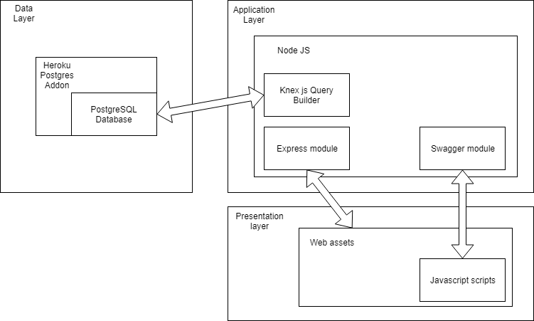

Deliverable D1
General group information
| Member # | Role | First name | Last name | Matricola | Email address |
|---|---|---|---|---|---|
| Member #1 | Administrator | Jacopo | Frasson | 905317 | jacopo.frasson@mail.polimi.it |
| Member #2 | Member | Davide | Spinelli | 900229 | davide2.spinelli@mail.polimi.it |
Links to other deliverables
- Deliverable D0: the web application is accessible at this address.
- Deliverable D2: the YAML or JSON file containing the specification of the app API can be found at this address and is also provided by swagger at this address.
- Deliverable D3: the SwaggerUI page of the same API is available at this address.
- Deliverable D4: the source code of D0 is available as a zip file at this address.
- Deliverable D5: the address of the online source control repository is available this address. We hereby declare that this is a private repository and,
upon request, we will give access to the instructors.
Specification
Web Architecture
Here we show a schematic representation of our application's architecture. It can be noted how the API routing is handled by Swagger, while the front end assets' routing is handled by express. Express only exposes a route to the static assets, while those are individually loaded and rendered client side by the browser. API
REST compliance
Client-server architecture
The application follows this REST principle. The presentation layer is rendered client side by the user's browser, while the application layer and the data layer reside on the remote server.
Statelessness
The application follows this REST principle. In particular, login auth tokens are all handled by the application layer without saving any state between requests; tokens are then
sent with the request header by the client for the sake of authorization and authentication.
Cacheability
Due to the low volume of requests our server will need to handle for the scope of this project, no cacheability was explicitly coded in for requests, though it's certainly possible to
add in the future.
Layered system
The routing of the requests is all internally handled by the application layer, the client only contacts a black box (the API endpoint). The system could be further expanded by adding new software or hardware layers
without modifying the client code.
Code on demand
No code on demand functionality has been added to the project.
Uniform interface
Book
Representation of all the information about a particular book, useful to the client for the sake of displaying such information to the user and to load the media
directly related to the book itself. The book's authors are also included in a string array (this was done due to time constraints, and would have been done with a full JSON object otherwise)
Author
Representation of all the information about a particular author.
Event
Representation of all the information about a particular event.
ShoppingCartItem
Object sent from the client to the server when adding a book to the shopping cart.
ShoppingCartBook
Information about a book together with the selected quantity for display in the shopping cart page.
Order
Object sent by the client to the server to place an order containing a series of books.
OrderResponse
All the information needed to display already placed orders' information to the user.
User
Representation of the user's data, for the display of private information.Data model
We report here the same ER diagram we included in the Design Document, with colored links that connect each data model in the Open API specification to the entities in the ER diagram that the application considers to create the object, or that the object is used to update.
Implementation
Tools used
We used the Webstorm IDE from Jetbrains (for Windows) to do the majority of the coding. The project takes advantage of the NodeJs environment, with the following modules:- Express for static routing
- Swagger and Swagger-UI for API routing and Open API usage
- Cors to adhere to cors specifications.
- JWT (JSON web token) for authentication
- Knex.js for query building The website is hosted on Heroku, with the PostgresSQL add-on activated for database support. The database was accessed manually with PGAdmin. The APIs where tested both using the Swagger UI interface, and Postman for Windows. The frontend contains static assets served by express, which include .css, .html and .js files. Some javascript scripts make use of the Jquery library for the sake of simplicity.
- How did you make sure your web application adheres to the provided OpenAPI specification? The web application was coded after the OpenAPI specification had been already largely thought out and specified in detail. Further edits proved necessary, but the team was able to successfully coordinate and mantain consistency.
- Why do you think your web application adheres to common practices to partition the web application (static assets vs. application data) The web application follows the most common standards of basic web development. NodeJS and Express make it very easy to separate the presentation layer and the application layer in a way that is transparent to the user.
- Describe synthetically why and how did you manage session state, what are the state change triggering actions (e.g., POST to login etc..). Authentication was required to allow for the basic "add to cart" and "purchase" functionalities we included in the application. The server is stateless, the session is saved on the client through the use of authentication tokens: these are saved in a cookie (that expires in 24 hours), which is sent in the request header of all the API calls that require authentication. The server is able to determine the user based on the token, and also if the token provided is still valid (tokens themselves are discarded after 24 hours from when they are first generated). This doesn't require any access to the data layer on the server part (aside from retrieving user information).
- Which technology did you use (relational or a no-SQL database) for managing the data model? The database is relational and runs on the PostgresSQL RDBMS.
- Resource identification in requests
The resources served to clients through the web API are completely separated from the actual server's internal representation (this is further explained in the Data Model section of this document).- Resource manipulation through representations
We tried to always give the client enough information to manipulate remote resources without requiring additional useless API calls. This wasn't always possible due to time constraints, but it was still kept into particular consideration.- Self-descriptive messages
The models served by the API are self explanatory, also thanks to the topic being fairly basic.- Hypermedia as the engine of application state
Due to the very low quantity of API endpoints and to the simplicity of the application, we didn't consider including this functionality as a priority.OpenAPI Resource models
All the following models can be seen in detail in the swagger UI page in the models section.Discussion
Other information
Task assignment
- Spinelli worked on back end (60%), front end (10%) and OpenAPI Spec (30% of the time)
- Frasson worked on back end (10%), front end (80%) and OpenAPI Spec (10% of the time)